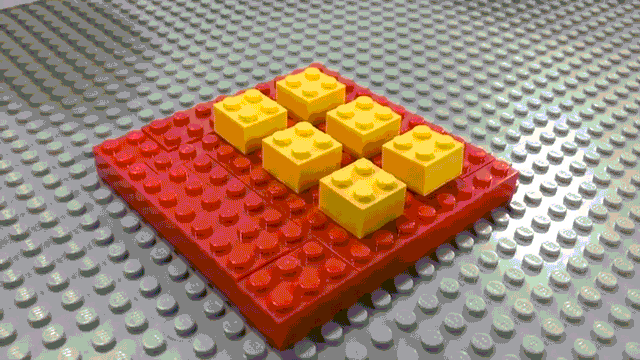
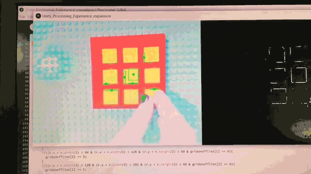
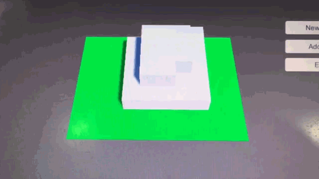

stack.
2016/Assistive Techstack. is a working prototype for a device that can help people with visual disabilities to create simple 3D models using the tactility of Legoes. Utilizing OpenCV, Unity3D, and a Lego board, the user can prototype simple cube-based models that they create layer by layer. Here is a quick video:
We used a Processing 3.0 flavor of OpenCV to do color detection on a grid-divided Lego board. If there was a Lego detected within one of the squares then a signal was sent to Unity3D via OSC that a Lego piece is now occupying that portion of the grid, and a 3D cube was then rendered in the relevant square on the field in Unity3D.
The lego board:
What the computer sees:
The simple 3D model:
We used simple controls, with a button to go up a layer, and another one to go down a layer, and then one that theoretically exports it as a 3D model so that it can be 3D printed.
Collaborators: Dylan J. Crow and Baaria Chaudhary